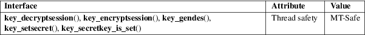

key_decryptsession, key_encryptsession, key_setsecret, key_gendes, key_secretkey_is_set − interfaces to rpc keyserver daemon
Standard C library (libc, −lc)
#include <rpc/rpc.h>
int
key_decryptsession(char *remotename, des_block
*deskey);
int key_encryptsession(char *remotename,
des_block *deskey);
int key_gendes(des_block *deskey);
int
key_setsecret(char *key);
int key_secretkey_is_set(void);
The functions here are used within the RPC’s secure authentication mechanism (AUTH_DES). There should be no need for user programs to use this functions.
The function key_decryptsession() uses the (remote) server netname and takes the DES key for decrypting. It uses the public key of the server and the secret key associated with the effective UID of the calling process.
The function key_encryptsession() is the inverse of key_decryptsession(). It encrypts the DES keys with the public key of the server and the secret key associated with the effective UID of the calling process.
The function key_gendes() is used to ask the keyserver for a secure conversation key.
The function key_setsecret() is used to set the key for the effective UID of the calling process.
The function key_secretkey_is_set() can be used to determine whether a key has been set for the effective UID of the calling process.
These functions return 1 on success and 0 on failure.
For an explanation of the terms used in this section, see attributes(7).

Note that we talk about two types of encryption here. One is asymmetric using a public and secret key. The other is symmetric, the 64-bit DES.
These routines were part of the Linux/Doors-project, abandoned by now.
crypt(3)